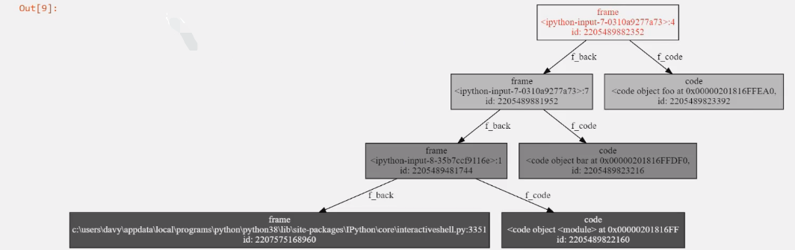
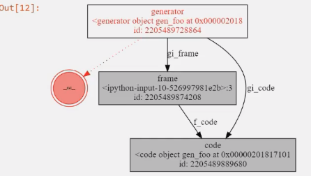
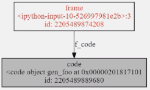
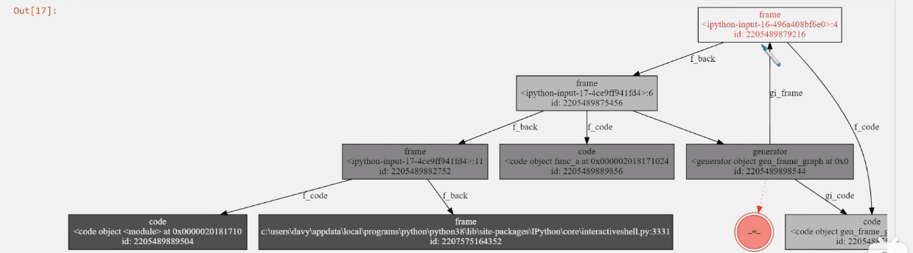
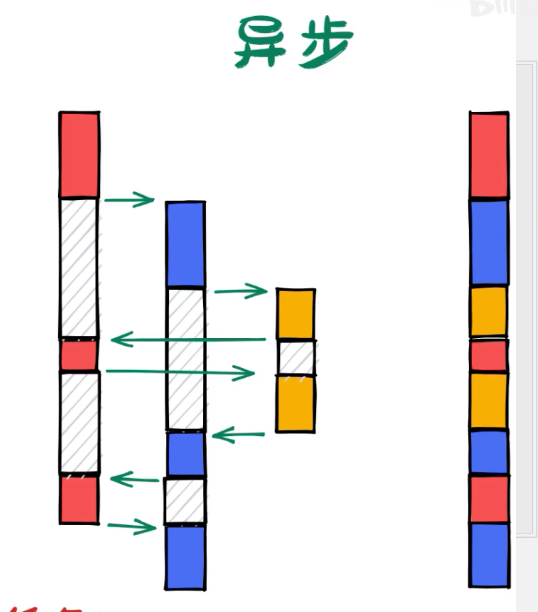
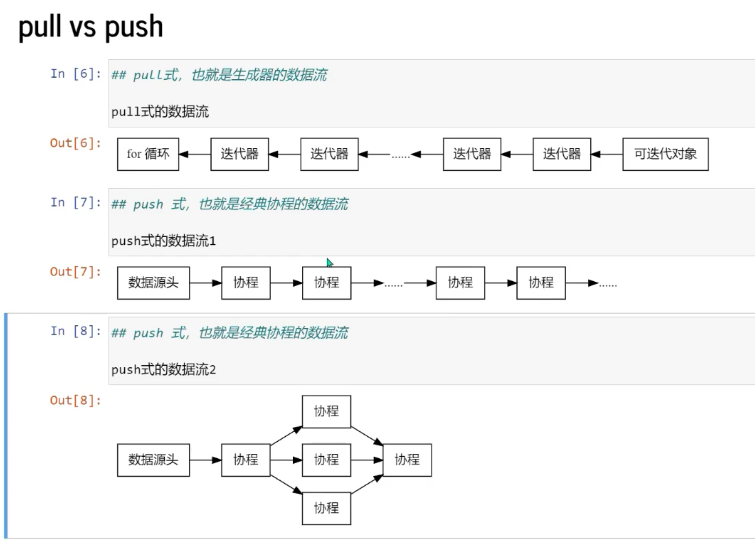
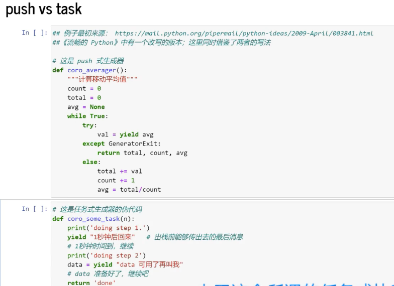
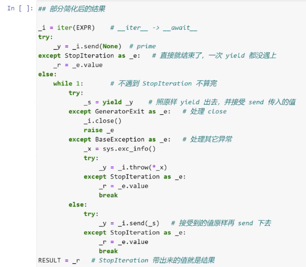
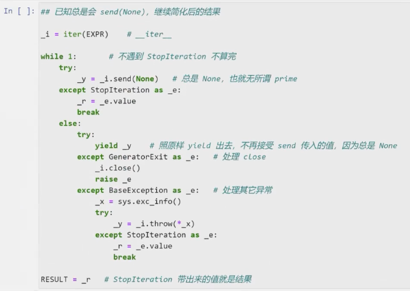
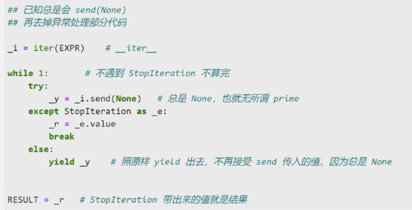

不基础的python基础-补
python一些细节
开始此文档目的是对python的细节进行补充，内容和知识点比较零散，更新时间不定。
1.1 默认参数
已知如下代码1
2
3
4class Player:
def __init__(self, name, items):
self.name = name
self.items = items
情形1:
当我实例化两个玩家时1
2p1 = Player("alice", [])
p2 = Player("Bob", [])
会发现大部分玩家默认都没有任何道具。
此时，想到python重载机制，利用默认参数进行重载。
既然大部分玩家默认没有道具，能否定义一个默认参数对每一个玩家进行初始化呢？1
2
3
4class Player:
def __init__(self, name, items=[]):
self.name = name
self.items = items
这样，在进行实例化时，无需传入一个默认的道具参数。1
2
3p1 = Player("alice")
p2 = Player("bob")
p3 = Player("Charles", ["sword"])
问题出现，当玩家获取了道具时1
2
3
4
5
6p1.items.append("bow")
p2.items.append("sword")
# 问题
print(p1.items)
OUT: ["bow", "sword"]
当定义默认参数时，只会evaluate一次值，也就是只求一次值。意味着两次初始化items用的是同一个list。
list 为mutable，所以二者共用了一个list1
2print(id(self.items))
# 两次输出的id相同
解决方法: 将items=[]改为items=None1
2
3
4
5
6
7class Player:
def __init__(self, name, items=None):
self.name = name
if items is None:
self.items = []
else:
self.items = items
1.2 浮点数
如下代码:1
2
3
4
5
6
7
8
9
10from objprint import op
op.config(arg_name=True)
op(0.1+0.2==0.3)
op(1e50==10**50)
op(1e500==1e600)
op(1e500>10**1000)
op(1e500*1e500>0)
op(1e500/1e500>0)
op(1e500/1e500==1e500/1e500)
输出1
2
3
4
5
6
7
8
9
10
11
12
13
140.1+0.2==0.3:
False
1e50==10**50:
False
1e500==1e600:
True
1e500>10**1000:
True
1e500*1e500>0:
True
1e500/1e500>0:
False
1e500/1e500==1e500/1e500:
False
关于浮点数的知识
计算机实现浮点数都使用IEEE754标准，由于浮点数的总体是无限且不可数的，我们不可能在计算机中完整地记录所有数字。
IEEE754标准提供了二进制转浮点数的标准 具体内容IEEE754
从而就产生了以上问题
问题1: 精度损失
1 | op(0.1+0.2==0.3) |
问题2:
python使用64位双精度浮点数，其有最大的能表示的浮点数，对于双精度浮点数来说，这个数大概是10的308次方。
超出了这个数字：IEEE754提供了无穷( Inf )和非数值( NaN )两种表示形式。1
2
3
4
5
6
7
8
9
10
11
12
13
14
15
16
17
18
19
20
21
22
23# 1e500超过了双精度浮点数最大能表示的范围，python将其转换成了Inf,1e600同理。
# 所以以下代码比较的是Inf 是否等于 Inf 详见IEEE754。
op(1e500==1e600)
1e500==1e600:
True
# 比较方式 -Inf = -Inf, Inf=Inf, NaN与任何浮点数（包括自身）的比较都为假。
# python在比较如下代码时如果这个float是Inf，则认为永远比integer要大。
op(1e500>10**1000)
1e500>10**1000:
True
# 既然如此 以下各数都是+Inf 正无穷乘以正无穷一定是大于0的。
# 但正无穷除以正无穷可能是大于等于零的任何值。
# 所以 Inf / Inf = NaN 不是数字 NaN当然不大于零。
op(1e500*1e500>0)
op(1e500/1e500>0)
1e500*1e500>0:
True
1e500/1e500>0:
False
# 左边是NaN右边也是NaN, 他们也不相等
op(1e500/1e500==1e500/1e500)
1e500/1e500==1e500/1e500:
False
综上，float可能会给程序带来意想不到的结果。
例如，在一些大型的数学计算中，中间的某一个过程出现了Inf或是NaN，他会随着计算将各种结果传染成Inf或NaN。
而且，程序不会报错，你无法意识到问题所在。
所以，要尽量避开浮点数。
如果不可避免，可使用以下方式检查关键步骤是否为Inf或NaN。1
2
3import math
math.isinf(Var)
math.isnan(Var)
1.3 class里的函数如何变成方法的(self作用)
1 | class A: |
在定义class时会创建一个命名空间，运行class里的code block,将里面的产生的local variable赋值到__dict__()里面。
为什么只需要传入一个位置参数呢1
2
3
4
5
6
7
8
9
10
11
12class A:
def f(self, data): # <-定义了两个位置参数
print(self.name)
print(data)
o = A()
print(A.f)
# 只有实例化之后才只需传入一个值
print(o.f)
返回：
<function A.f at 0x7f7444387eb0>
<bound method A.f of <__main__.A object at 0x7f74443957e0>>
1 | class A: |
1.4 鸭子类型
“当看到一只鸟走起来像鸭子、游泳起来像鸭子、叫起来也像鸭子，那么这只鸟就可以被称为鸭子。”
鸭子类型是动态类型的一种风格，在这个风格中一个对象有效的语义，不是由继承自特定的类或实现特定的接口，而是由“当前方法和属性的集合”决定
例如：1
2
3
4
5
6
7
8
9
10
11
12
13
14
15
16
17
18# 可迭代对象
a = [11, 22, 33]
# 我们可以使用 for 循环来遍历他
for i in a:
print(i)
# 现有自定义类
class B:
pass
# 使用 for 循环必然会报错 此时 可以为类 B 添加一个 __iter__()方法
class B:
def __iter__(self):
return iter([1, 2, 3])
# 同理 我们可以使用len()函数来查看一个对象的长度
len(a)
# 如何使类B也能使用len函数查看长度呢
class B:
def __len__(self):
return 10
总结 python不会检查某个类是什么类型，他只会检查是否含有对应方法。
1.5 assert 关键字
assert 意为断言 当 后面的表达式为假时抛出AssertionError
例如1
2
3
4
5
6
7x = "hello"
# 如果条件返回True，则什么也不会发生：
assert x == "hello"
#如果条件返回 False，则会引发 AssertionError：
assert x == "goodbye"
1.6 找到可迭代对象共同的接口
常见的可迭代对象
1 | iterables = [ |
利用python 强大的类型能力1
2
3
4
5
6
7
8
9
10def common_attrs(*objs):
"""计算对象之间的共同属性"""
assert len(objs) > 0
attrs = set(dir(objs[0]))
for obj in objs[1:]:
attrs &= set(dir(obj)) # 取交集
attrs -= set(dir(object)) # 删除object 基础对象属性
return attrs
iterable_common_attrs = common_attrs(*iterables)
print(iterable_common_attrs)
返回三个结果1
__contains__ __len__ __iter__
这里列举的对象都是容器类型的可迭代对象
加入文件1
2
3
4
5f = open("...", "r") # 文件也是可迭代对象
# 加入到可迭代对象清单中
iterables.append(f)
iterable_common_attrs &= set(dir(f))
print(iterable_common_attrs)
返回1
__iter__
对于双下划线的魔法方法 __iter__()，对应的调用方法就是内置函数iter()
对所有的可迭代对象调用iter()方法1
2for iterable in iterables:
print(iter(iterable))
1 | <str_iterator object at 0x7f07f2c3c700> |
此外 由可迭代对象列表得到相应的迭代器列表1
2
3
4iterators = [iter(iterable) for iterable in iterables]
iterator_common_attrs = common_attrs(*iterators)
print(iterator_common_attrs)```
{‘next‘, ‘iter‘}1
2
3
4
5
6
7
8
9
10
11
12
13
14
15
16
17
18所以 迭代器有两个共同接口 `__iter__` 和 `__next__` 迭代器也是一个可迭代对象
#### 关于next魔法方法

至此 我们了解到迭代的三个步骤：
* 调用 `iter(iterable)`来构建迭代器
* （多次）调用`next(iterator)`来获取值
* 最后捕获`StopIteration`异常来判断迭代结束
现在 我们可以使用`while循环`来模拟`for循环`迭代
```python
# 创建迭代器
iterator = iter(actions) # 对应可迭代对象的 __iter__ 方法
while 1:
try:
# 通过迭代器获取下一个对象
print(next(iterator)) # 对应迭代器的 __next__ 方法
except StopIteration:
# 迭代结束 跳出循环
break
迭代器的__iter__方法作用是什么呢？
了解如何定义一个迭代器
迭代器的基本功能：
- 初始化时要传入可迭代对象，这样才能知道去哪里取数据
- 要初始化迭代进度
- 每次迭代调用
__iter__()方法时：- 如果仍有元素可以迭代，则返回本轮迭代的元素，同时更新当前迭代进度
- 如果无元素可以迭代，则迭代结束，抛出
StopIteration异常
看起来没什么作用，所以我们可以给迭代器添加额外的功能
- 如果无元素可以迭代，则迭代结束，抛出
- 如果仍有元素可以迭代，则返回本轮迭代的元素，同时更新当前迭代进度
- 设置一个黑名单，如果当前元素在黑名单内，则跳过
- 将某些符合条件的数据
*2后返回以上代码运行起来沒什么问题1
2
3
4
5
6
7
8
9
10
11
12
13
14
15
16
17
18
19
20
21
22
23
24
25
26BLACK_LIST = ["白嫖", "取关"]
class SuzhiIterator:
def __init__(self, actions):
self.actions = actions
self.index = 0
def __next__(self):
while self.index < len(self.actions):
action = self.actions[self.index]
self.index += 1
if action in BLACK_LIST:
continue
elif '硬币' in action:
return action * 2
else:
return action
raise StopIteration
actions = ['点赞','投币','取关']
sz_iterator = SuzhiIterator(actions)
while True:
try:
print(next(sz_iterator))
except StopIteration:
break
但当我们使用for 循环来遍历时 会报错要想这个对象是1
2
3
4
5# for 循环需要的是 可迭代对象 而不是迭代器
for x in SuzhiIterator(actions):
print(x)
TypeError: 'SuzhiIterator' object is not iterableiterable那么你需要实现__iter__接口
为了构建这个可迭代对象 可以再新建一个类当然 这样做 显然有点多余 因为他只完成了构建可迭代对象的过程1
2
3
4
5
6
7class SuzhiActions:
def __init__(self, actions):
self.actions = actions
def __iter__(self):
return SuzhiIterator(self.actions) # return self 也可
for x in SuzhiActions(actions):
print(x)
通常这样 让迭代器自己来实现__iter__接口现在 迭代器就可以在1
2
3# __iter__ 接口就是要返回一个迭代器
def __iter__(self):
return selffor 循环中使用了1
# 迭代器 同时 也是 可迭代对象
迭代器协议
在python文档中明确指出了，迭代器对象必须同时实现__next__和__iter__两个方法，这称为迭代器协议。
根据这个协议，迭代器必须是可迭代的，换言之，迭代器 是一种 可迭代对象 。
故缺少了__iter__方法的迭代器是不完整的，不符合迭代器协议的要求。
所有迭代器的__iter__方法大多数都只要return self即可。迭代器的意义
浅层的意义 - 统一通过
next()方法获取数据，可以屏蔽底层不同的数据读取方式，从而简化编程。 - 容器类的数据结构只关心数据的金泰存储，每一次迭代都需要额外的迭代器对象专门负责记录迭代过程中的状态信息。
按照这个思路 很容易形成这样的认知：迭代器就是为了让数据能够更快捷地遍历 从而定义的辅助对象迭代器的作用并不止于此。1
2
3
4
5
6
7这一些迭代对象对我们来说非常陌生，不会去使用他们，所以这种认知在这个层面上来讲，是没有错误的。
<str_iterator object at 0x7f07f2c3c700>
<list_iterator object at 0x7f07f2c3c700>
<tuple_iterator object at 0x7f07f2c3c700>
<dict_keyiterator object at 0x7f07f2a520c0>
<set_iterator object at 0x7f07f2a56640>
<_io.TextIOWrapper name='test.ui' mode='r' encoding='UTF-8'>
如果只是在for 循环中使用，是无需用到迭代器的__iter__方法的，就像前面使用while循环来模拟for循环。
深层意义
迭代器的__iter__方法是点睛之笔！
对此，我们分一下类
现在有两种可迭代对象 容器类型的
- 列表、元组、字典等
- 只有
__iter__接口 - 静态的数据
- 需要额外的迭代器支持
- 支持多次迭代
迭代器类型
- 文件、 StringIO等
- 同时实现
__iter__和__next__接口 - 动态的
- 只能迭代一次
也就是说而一旦迭代器实现了1
2
3# 针对容器类型可迭代对象的循环
for x in iterable: # 背后： 将可迭代对象 生成了 迭代器
pass # 迭代器的生命周期和此循环绑定在一起__iter__方法
首先迭代器的构建就脱离的这个循环的存在，整个迭代过程只需要迭代器就够了
从此 迭代器不光是从后台走向了前台，而且直接让可迭代对象原理了循环
迭代器的构建是在代码中单独完成的，和当前循环操作解耦了
于是：
- 一个可迭代对象可以构建出任意多个不同的迭代器
- 一种迭代器可以应用有v任意多个可迭代对象（包括其他迭代器）
应用场景
- 构建一个数据管道
如果迭代器不可迭代：
三者关系如下
[for循环] <- 迭代器（隐藏） <- 可迭代对象
如果迭代器可以任意嵌套连接的：
for 循环 <- 迭代器 <-迭代器 <- 迭代器 <- 迭代器*n <- 可迭代对象
- 很多的迭代器串联起来，形成一个处理数据v的管道，或者称为数据流
- 在这个管道中，每一次只通过一份数据v,避免了一次性加载所有数据
- 迭代器也不仅仅只是按返回数据那么简单了，他开始承担处理数据的责任
- 例如，
SuzhiIterator实现了部分过滤器和放大器的功能
- 例如，
- 当通过迭代器获取数据的时候，远离了数据存储，渐渐开始不关心数据如何存储。
- 数据生成器
1
2
3
4
5
6
7from random import random
class Random:
def __iter__(self):
return self
def __next__(self):
return random()
这个迭代器不但不需要存储数据，甚至连StopIteration都不需要捕获
它可以无穷地迭代下去，每次数据都是实时产生的，不占用内存
（这不就是生成器吗！——）
虽然该迭代器是名副其实的数据生成器，但是生成器在python 中特指包含yield 的函数对象，以后会记录。
附:没有定义__iter__的可迭代对象
并不是所有的可迭代对象都必须定义__iter__方法
如果一个对象没有__iter__方法，但是定义了__getitem__方法，同样是可迭代的。1
2
3
4
5
6
7
8
9# 例如
class DumbList:
def __getitem__(self, index):
if index > 5:
raise StopIteration
return index * 2
dl = DumbList()
for x in dl:
print(x)
因此，不能通过检查存在__iter__ 方法来判断一个对象是否为可迭代的，而是应该直接使用iter()函数，如果不可迭代，则会抛出TypeError异常。1
2
3
4class NotIterable:
pass
ni = NotIterable()
it = iter(ni)
1.7 生成器
1.yield关键字
- 只能用在函数内。
- 在函数的任何地方出现了
yield关键字，哪怕永远无法被执行，函数都会发生变化。
这个变化就是当你以正常方式调用函数时，返回一个生成器对象，此时函数还没有运行。1
2
3
4
5
6
7
8def gen():
print("hello")
if 0:
yield
g = gen()
print(g)
# <generator object at 0x0000...>
# 未打印hello2.术语解释
通常我们把含有yield关键字的函数称为 生成器函数 generator function ，把调用生成器函数返回的结果称为 生成器。
但在python文档中：生成器 通常指的是生成器函数，但是在一定语境下也可以指代生成器迭代器
generator iterator，为了避免歧义，推荐使用完整的术语。
既然叫做迭代器，那么我们可以理解 生成器对象就是一个迭代器。
从而满足 迭代器协议：
__iter__返回迭代器对象本身__next__返回一个迭代数据，如果没有数据，抛出StopIteration异常3.深入理解yield关键字
语句or表达式
- yield 语句
- PEP252 — Simple Generator
- Python 2.2
- yield 表达式
- 调用生成器函数并不是直接执行其中的代码，而是返回一个对象。
- 生成器函数内的代码，需要通过生成器对象来执行。
从这一点，生成器函数的作用和类(class)类似。
生成器对象就是迭代器，所以其运行方式和迭代器是一致的：
- 通过
next()函数来调用 - 每次
next()都会遇到yield后返回的结果（作为next()的返回值） - 如果函数运行结束（即遇到
return或代码执行完毕）则抛出StopIteration异常
示例1
2
3
4
5
6
7
8
9
10
11
12
13
14
15
16
17
18
19
20
21
22
23
24
25
26
27
28
29
30
31
32
33
34
35
36
37# 定义一个生成器函数
def gen(a):
print("hello")
if a:
print("yield")
yield 666
print("back")
print("bye")
return "result"
g1 = gen(False) # 不执行yield
x = next(g1)
'''
hello
bye
Traceback (most recent call last):
File "D:\a.py", line 10, in <module>
x = next(g1)
StopIteration: result
return 的结果也会被异常带出函数
'''
g2 = gen(True)
y = next(g2)
print(y)
'''
hello
yield
666
'''
next(g2)
'''
back
bye
Traceback (most recent call last):
File "D:\a.py", line 10, in <module>
next(g2)
StopIteration: result
'''在循环中使用 yield
只遇到一次yield语句的生成器就是只能迭代一次的迭代器，通常没什么价值
要想多迭代几次，可以在函数内多次使用yield语句：相对应的，1
2
3
4
5def gen():
yield 1
yield 2
yield 3
yield 4yield也可以搭配循环使用：1
2
3
4
5
6
7
8# iterator count
def count(start=0, step=1):
# count(10) -> 10 11 12...
# count(2.5, 0.5) -> 2.5 3.0 3.5 ...
n = start
while True:
yield n
n += step生成的四个状态
- 当调用生成器函数得到生成器对象时
- 此时的生成对象可以理解为初始状态
- 通过
next()调用生成器对象，对应的生成器函数代码开始运行- 此时生成器对象处于运行中状态
- 遇到
yield语句，next()返回时yield语句右边的对象作为next()的返回值- 生成器在
yield语句所在的位置暂停，当再次使用next()时继续在改位置运行
- 如果执行到函数结束，则抛出
StopIteration异常
| 动作 | class实现的迭代器 | yield生成器 |
|---|---|---|
| 定义迭代器 | class Iterator: def _init_(self, *args): | def iter(*args): … |
| 构建迭代器 | Iterator(args) | iter(args) |
| next(iterator) | def _next_(self): return values | yield value |
| StopIteration | raise StopIteration | return |
| iter(iterator) | def _iter_(self): return self | 自动实现 |
生成器的三种应用场景：
- 定义一个容器类的对象，为该对象实现
__iter__接口 - 定义一个处理其他可迭代对象的迭代器
- 定义一个不依赖数据存储的数据生成器
为数据列实现__iter__()接口
1 | # 迭代器类 |
yield 重构1
2
3
4
5
6
7
8
9
10
11
12
13
14
15# 删除CustIter类
class CustData:
# 其余部分代码不重要 略
...
def size(self): # 假设可以得到数据的大小
return self.size
def get_value(self, index):
return index
def __iter__(self):
index = -1 # 必须是局部变量
while index < 2: # 设置迭代完成的条件
index += 1
yield self.get_value(index)
mydata = CustData() # 注 mydata 是可迭代对象，但不是迭代器
实现有处理数据功能的迭代器1
2
3
4
5
6
7
8
9
10
11
12
13
14
15
16
17
18BLACK_LIST = ["1", "2"]
class DataFilter:
def __init__(self, actions):
self.actions = actions
self.index = 0
def __next__(self):
while self.index < len(self.actions):
action = self.actions[self.index]
self.index += 1
if action in BLACK_LIST:
continue
elif "3" in action:
return action * 2
else:
return action
raise StopIteration
def __iter__(self):
return self
yield重构1
2
3
4
5
6
7
8
9
10
11
12BLACK_LIST = ["1", "2"]
def filt(actions):
for action in actions:
if action in BLACK_LIST:
continue
elif "3" in action:
yield action * 2
else:
yield action
actions = ["1", "3", "4"]
for x in filt(actions):
print(x)
实现一个数据生成器
计数器实现
1 | class Count: |
yield重构1
2
3
4
5
6def count(start):
while start > 0:
start -= 1
yield start
for x in count(5):
print(x)
(重要) 生成器技术实现
主要内容
- 生成器函数和普通函数的区别
- 生成器对象和生成器函数之间的关系
- 生成器函数可以暂停执行的秘密
普通函数的运行机制
函数对象和代码对象
每当定义了一个函数之后，就得到了一个 函数对象：函数中的代码是保存在 代码对象 Code Object 中的：1
2
3
4def func():
...
print(func)
# <function __main__.func()>代码对象会随着函数对象一起创建，是函数对象的一个重要属性。1
2print(func.__code__)
# <code object func at 0x..., file "<...>", line 1>
Code objects represent byte-compiled executable Python code, or byte code
代码对象中重要的属性以co_开头：1
2
3
4
5
6
7
8
9
10
11
12
13
14
15
16
17
18
19
20
21
22
23
24func_code = func.__code__
for attr in dir(func_code):
if attr.starstwith("co_"):
print(f"{attr}\t: {getattr(func_code, attr)}")
'''
co_argcount : 0
co_cellvars : ()
co_code : b'd\x00S\x00'
co_consts : (None,)
co_filename : <ipython-input-1-4152f59160a0>
co_firstlineno : 1
co_flags : 67
co_freevars : ()
co_kwonlyargcount : 0
co_lines : <built-in method co_lines of code object at 0x000001F0961F68C0>
co_linetable : b'\x04\x01'
co_lnotab : b'\x00\x01'
co_name : func
co_names : ()
co_nlocals : 0
co_posonlyargcount : 0
co_stacksize : 1
co_varnames : ()
'''
函数运行帧
函数对象和代码对象保存了函数的基本信息，当函数运行时，还需要一个对象来保存运行状态。
这个对象就是帧对象（Frame Object）
Frame objects represent execution frames.
每次调用一个函数，都会创建帧对象，来记录每次运行的状态。
使用inspect检查帧对象1
2
3
4
5
6
7
8
9import inspect
def foo():
# 获取到函数的运行帧并返回
# 通常情况下 函数运行帧 在函数运行结束后会被立即销毁
return inspect.currentframe()
f1 = foo() # 但由于变量被引用，所以帧不会被垃圾回收
print(f1)
# <frame at 0x..., file '...', line 5, code foo>
1 | # jupyter 运行此代码 导入 import objgraph |
可见 function 和 frame对象均有对code的引用。
帧对象中重要的属性以f_开头：
f_code：执行的代码对象f_back: 指向上一个帧，也就是调用者的帧f_locals: 局部变量f_globals: 全局变量f_lineno：当前对应的行号
函数运行栈
当一个函数调用了另一个函数，此时前一个函数还没有结束，所以这两个函数的帧对象是同时存在的。
比如，我们的程序一般始于一个main函数，然后又调用其他函数，以此类推。
因此，一个程序的运行期，同时存在很多个帧对象。
函数之间的调用关系是先执行的后退出，所以帧对象之间的关系也是先入后出，正好以栈的方式保存。
因此，函数的运行帧又叫栈帧。
注：一个线程只有一个函数的运行栈。观察此过程，可以安装vscode的python preview模块
1 | # 展示发生函数调用时的栈 |

生成器函数有何不同
生成器函数依然是函数对象，当然也包括了代码对象。1
2
3
4import inspect
def gen_foo():
for _ in range(10):
yield inspect.currentframe() # 每一次迭代都返回当前帧
调用生成器函数不会直接运行（也就是说，不像普通函数那样创建帧对象并且压入函数栈），而是得到一个生成器对象。
那么秘密自然在生成器对象里：1
2gf = gen_foo()
show_refs(gf)

当每次使用next()对生成器进行迭代时，都用这个帧对象gi_frame来保存状态：
1 | # 展示生成器迭代过程中都是同一个frame对象 |
生成器的frame对象在暂停状态下看不到调用关系图：
1 | gf = gen_foo() |

观察生成器运行时运行栈的关系图1
2
3
4
5
6
7
8
9
10
11
12def gen_frame_graph():
for _ in range(10):
# 运行时生成图形
graph = show_refs(inspect.currentframe())
yield graph
gfg = gen_frame_graph()
# 定义两个不同名的函数是为了方便观察栈的变化
def func_a(g):
return next(g)
def func_b(g):
return next(g)
func_a(gfg)

综上总结：
- 生成器函数并不直接运行，而是借助生成器对象来间接运行
- 创建生成器对象的同时创建了帧对象，并且由生成器对象保持引用
- 每次使用
next()调用生成器时，就是将生成器引用的帧对象入栈 - 当
next()返回时，也就是代码遇到yield暂停的时候，就是将帧出栈 - 知道迭代结束，帧最后一次出栈，并且被销毁
同步和异步的概念
普通函数： - 调用函数：构建帧对象并入栈
- 函数执行结束：帧对象出栈并销毁
1 | # 普通函数只能以同步方式运行多任务 |
生成器函数：
- 创建生成器： 构建帧对象
- （多次）通过
next()出发执行：帧入栈 - （多次）通过
yield帧出栈（保留） - 迭代结束：帧出栈并销毁
1
2
3
4
5
6
7
8
9
10
11
12
13
14
15
16
17
18
19
20# 生成器函数让异步称为可能
def async_task():
# step 1
yield
# step 2
yield
# step 3
yield
# 任务队列
all_tasks = []
# 创建两个任务
async_task_a = async_task()
async_task_b = async_task()
# 加入任务队列
all_tasks.append(asnc_task_a)
all_tasks.append(asnc_task_b)
def async_task_runner():
# 简易异步任务调度器
for task in all_tasks:
next(task)
从生成器到协程
现在，我们可以更好地理解所谓的generator iterator是什么了：生成器对象是一个用来迭代执行生成器函数的迭代器
- 数据的迭代器：针对一个包含很多元素的数据集，逐个返回其中的元素
- 生成器迭代器：针对一个包含很多代码的函数，分段执行其中的代码
让一个函数多次迭代运行其中的代码才是生成器对象最根本的作用，而不仅是字面意义上的生成数据的东西
迭代产生数据只是迭代器执行代码的自然结果。
当用生成器来实现迭代器的时候，我们更加关注yield <value>返回出的数据。
如果关注点在被迭代执行的代码上，就能对生成器有个全新的认识，就是协程。协程（yield）
基于生成器的协程
Generator-based Coroutines
Deprecated since version 3.8, will be removed in version 3.11: Use
async definstead.
对比 generator 和 coroutine
虽然py有了新的语法，但是他只是增加了一个原生的coroutine类型。
1 | # 生成器版协程 |
1 | # 新版协程 |
这俩完全一样，除了__next__被去掉，因为协程不需要迭代。__iter__换成了__await_gi_yieldfrom换成了cr_await
为了更好理解和学习协程，有必要了解两者关系及不同。
生成器的增强点
前面提到过生成器最大的改变点就是yield语句升级为了yield表达式见yield对函数做了什么
所谓表达式（Expression），意味着他可以被解析成一个值，然后赋值给变量。1
2
3
4
5
6x = yield
# 计算后赋值
x = yield + 1
# 表达式 作为函数参数 但是需要使用()
print((yield))
# 以上 yield 表达式均不能用在函数外面
yield表达式如何获取到值？1
2
3
4
5
6
7
8
9
10
11
12
13
14
15
16def show_yield_value():
print("开始")
x = yield
print(f"x is {x}")
g = show_yield_value()
next(g) # 第一次
next(g) # 第二次
'''
x is None
---------------------------------------------------------------------------
StopIteration Traceback (most recent call last)
Input In [8], in <cell line: 1>()
----> 1 next(g)
StopIteration:
'''
使用next()函数来驱动生成器时，yield表达式的值总为None。
为生成器增加一个send()方法，改方法可以接受一个参数。send方法顾名思义，将改参数发送给生成器，时生成器恢复运行的同时，将该入参作为yield表达式的值。
1 | # 还是上面的生成器函数 |
关于prime
对于刚刚创建好的生成器，总是需要send(None)，使其运行到yield上方暂停，这个步骤称为prime。
这里prime做动词意思：PREPARE SOMEBODY to prepare someone for a situation so that they know what to do. 使某些人、东西准备好应付某个情况。
prime在《流畅的python》中文版被翻译为 预激 ，感觉过于专业拗口，其实这个步骤后续没有那么重要（后面会解释），所以我就直接称为 激活 。
最先调用next(my_coro)函数这一步通常称为“预激”（prime）协程（即，让协程向前执行到第一个yield表达式，准备好作为活跃的协程使用）。
yield表达式的优先级
1 | def add_yield_value(): |
yield表达式优先级比较低，要想实现相应的功能尽可能地给yield加括号 提高优先级。
send总结
send是生成器对象的方法- 对于生成器对象
g，next(g)等价于g.send(None) - 只有当生成器处在暂停状态时，才能传入非None值
send方法是为了协程而增加的api，所以：- 如果将生成器视作协程，就应该只用
sned方法 - 如果视作迭代器，就仍用
next
所以，后面我们统一使用g.send(None)方式。
简单的echo示例
- 如果将生成器视作协程，就应该只用
1 | def gen_echo(): |
使用close()结束生成器
当生成器作为迭代器来用的时候，他的生命周期取决于有多少元素可以迭代。
当作为协程来用的时候，通常可以视作在执行一个任务，我们希望任务的终止变得可控。
新增的close方法就是用来结束一个协程：
1 | echo.close() |
由于echo协程非常简单，所以他可以直接结束。
如果协程代码比较复杂，他可能需要在结束的时候做一些善后处理，比如释放资源等。
类似于StopIteration的实现机制，结束协程也是靠异常来实现的：1
2
3
4
5
6
7
8
9def gen_echo_v2():
while 1:
try:
x = yield
except GeneratorExit: # 协程也叫这个
print("exit") # 做善后处理
return # 必须要结束函数 break 同理 如果没有进行此操作 回到yield 则运行时错误
else:
print(x)
1 | echo_v2 = gen_echo_v2() |
除了显式地调用close方法，如果生成器对象被垃圾回收，也会自动调用close:
1 | # 例如 |
使用throw()将异常抛给yield
类似close() 只是它是固定的GeneratorExit类型，而throw是任意的。
1 | def gen_echo_v3(): |
1 | echo_v3 = gen_echo_v3() |
协程的几个功能点
1 | # 例子来自《流畅的python》 |
- 在
yield位置产出数据 - 在
yield位置暂停 - 在
yield位置恢复，并接收新的参数 - 在
yield位置传入结束信号 - 在
yield位置传入其他异常yield三种用法
基于生成器的协程 概念
按照Python 文档的描述，所谓的 基于生成器的协程 指的是用yield from创建的生成器，并且还要搭配asyncio.corotine装饰器来使用。
生成器的三种模式
来自龟叔的解释
Python之父Guido在一封邮件里总结道，生成器有三种模式：
There’s the traditional “pull” style (iterators), “push” style (like the averaging example),
and then there are “tasks”.
- pull 特点在于能不断向外产出数据，也就是迭代器
- push 特点在于能不断向内发送数据，比如上一章中的计算平均移动的例子，是非常早的协程概念
- task 任务式 (Asyncio里的协程)


data vs event
一句话解释是：
- pull/push 都是受数据驱动的
task是受事件驱动的
1
2
3
4# pull 风格的生成器伪代码
def pull_style():
while still_have_data:
yield data1
2
3
4# push 伪代码
def push_style():
while still_have_data:
input_data = yield output_data1
2
3# task 生成器 协程
def task_style():
??? = yield ???什么是event?
事件（event）是个抽象的概念，就是指一件事情发生了。
例如：
要休息3秒 钟后继续执行， 3秒时间到，这就是一个事件。
再例如：
要读取网络数据1
socket.recv(1024)
如果socket还没收到数据，此时这个调用就会阻塞，知道有数据可读。socket变得可读，这就是一个事件。
event是如何运作的
事件通常是通过回调函数（callback）来处理的。1
2
3
4
5# 设置回调函数
# 3s后调用func
call_later(3, func)
# 当socker 可读时调用read
register(sock, selectors.EVENT_READ, read)那为什么要让出
yield执行权（也就是出栈）？- 遇到什么样的事件需要
yield？ - 在出栈前该如何设置事件（回调）？
- 遇到什么样的事件需要
- 凭什么能恢复执行（入栈）？
1 | RESULT = yield from EXPR # 表达式的值必须是一个可迭代对象 |
例子

继续简化

再简化

定义一个同步模式的简单任务
1 | def one_task(): |
当小步骤遇到阻塞
1 | from time import sleep |
可以通过yield创建协程 阻塞由下游传染至上游
1 | # small step |
yield 可以正常运行，但阻塞问题仍然没有解决
1 | # small step |
1 | try: |
1 | # one_task |
改用yield from
1 | # big_step |
统一使用yield from
1 | # small_step |
又正常了
将任务彻底协程化
1 | # one_task |
1 | # 调用 |
1 | # 定义一个通用任务驱动器 |
1 | # 运行 |
但是 此时的兼容性并不好
例如：
1 | else: |
找到YielfFrom类，修改
1 | def __iter__(self): |
Task 类
1 | else: |
我们来看最终代码
1 | import time |
升级为新的语法
- 首先将其中所有的
yield from替换成await __iter__替换 为__await__- 包含
await的函数改为async def
两次程序结果一模一样
两个程序的对比
使用yield from生成的函数成为generator function 执行的结果称为generator
使用await生成的函数称为coroutine function执行的结果称为corotine
我们将corotine的协程称为native corotine, generator的协程称为generator based corotine
既然都已经升级为新语法了 我们可以把YieldFrom这个类改为awaitable
那么什么是awaitable呢
这个概念分为两种，一种是我们在上面定义的corotine，另外一种就是我们在class Awaitable定义的__await__方法
这两种都可以跟在await关键字后面。
在asyncio里有两种class也是awaitable的，一个是Task一个是Future，更为准确的说是一个，Future，因为Task实际上是继承Future
在Future相关的代码里
1 | def __await__(self): |
yield self非常关键，可以说在asyncio里面只有在这个地方才能找到yield
在前文生成器原理讲到过yield会让函数出栈，也就是让出执行权，实际上await没有此功能，他在一定程度上等同于yield from，负责将这些协程链接起来，没有将函数出栈的能力。
两个示例代码
1 | class Task: |
1 | async def one_task(): |
await会将send一层一层地传递下去，这里不会造成阻塞，直到运行到了Awaitable中的yield，此时开始出栈，并向上传播，造成corotine在await这个地方暂停，由此send函数也就返回了，Task.run继续向下运行。
协程都让出了执行权，但这个Task.run还在这里运行，那么前面的协程不久白出栈了吗，所以Task.run函数必须要退出。
1 | class Task: |
1 | if __name__ == '__main__': |
返回值通过作为await表达式语句的返回值一层一层往上游传递，最顶层的corotine则通过 except StopIteration传递出来，也就意味着这个任务真正地结束了。
实验代码
1 | import time |